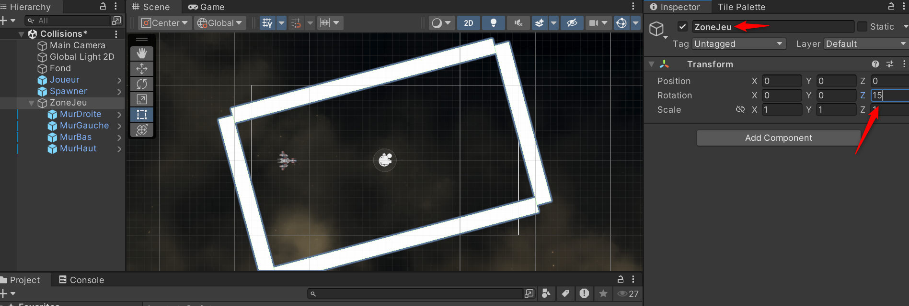

Jeux orienté objet
Élément de compétence ciblé
00SW - 4 : Programmer la logique du jeu ou de la simulation
Habiletés
- Programmer les comportements des éléments graphiqueset des périphériques
- Utiliser les moteurs de jeu ou de simulation
Reprendre le projet
Le projet entammé dans la section Mouvement comporte le joueur et son déplacement, ainsi que la saisie des entrées de l'utilisateur. La section Physique 01 ajoute le lien avec le moteur de physique et la suivante Physique 02 implémente plusieurs fonctionnalités.
Cette section exploite les concepts de GameObjects complexes et de hiérarchie parent-enfant
Commencer par ouvrir le projet existant.
GameObjects complexes
Le GameObject utilisé seul est déjà flexible et permet de créer une grande partie des éléments de jeux. Une technique tirée de la conception orientée objet est utilisée pour implémenter les mécaniques plus complexes, ou même simplement organiser efficacement les éléments d'une scène.
La composition et l'aggrégation sont deux concepts que l'on rencontre fréquement sans les nommer ou les définir. Les deux reposent sur le fait que la classe est un regroupement de plusieurs autres classes, avec une disctinction importante :
-
Composition : les éléments (classes) de cette contruction n'ont pas de but ou de raison d'être si la classe principale n'existe pas. Il y a un concept de propriété et les éléments seront détruit lorsque la classe sera détruite.
-
Aggrégation : les éléments regroupés fonctionnent ensemble mais peuvent exister et être utilisés indépendament de la classe conteneur.
En pratique
Organiser des éléments
- Le projet en cours contient 4 murs délimitant l'aire disponible pour le joueur. Ces murs fonctionnent indépendament les uns des autres et ont leur propre raison d'être.
- Le concept d'aggrégation est utilisé pour organiser les éléments et créer une relation entre ces objets. En langage de conception cette aggrégation pourrait être représentée sous forme de classe.
| ZoneJeu |
|---|
| MurHaut |
| MurBas |
| MurGauche |
| MurDroite |
- Concrètement au niveau du moteur de jeu, créer un GameOject vide et le nommer ZoneJeu.
- Glisser chaque mur sur le GameObject ZoneJeu, les murs deviennent des enfants de ZoneJeu.
- Remarquer l'indentation des enfants par rapport au parent dans l'inspecteur d'hiérarchie. Il est aussi possible de masquer les enfants afin d'avoir une meilleure vue d'ensemble de la scène.
La relation parent-enfant
La relation parent-enfant entre des GameObjects implique plus qu'un simple regroupement.
- ATTENTION : Les propriétés de position, rotation et mise à l'échelle des enfants deviennent relatives à celles du parent. Donc si une propriété du parent est modifiée, les enfants seront modifiés pour réfléter ce changement.

- Les scripts doivent propager les informations du parent vers l'enfant. Par exemple un personnage active le tir de son pistolet, la voiture allume les phares, etc.. Donc le parent est conscient et a le droit de modifier l'enfant mais pas l'inverse.
En pratique
Ajouter une arme
-
En s'inspirant du lancement d'astéroïde de la section Physique 02, créer deux armes différentes qui tiremt lorsque la touche espace est enfoncée. La première lance un seul projectile et la seconde en lance 3, un à l'horizontale et deux autres avec un angle de 30 degrés (plus haut et plus bas).
-
Calibrer le rythme de tir de chaque arme pour qu'il soit équilibré.
-
Ajouter une des deux armes comme enfant du joueur.